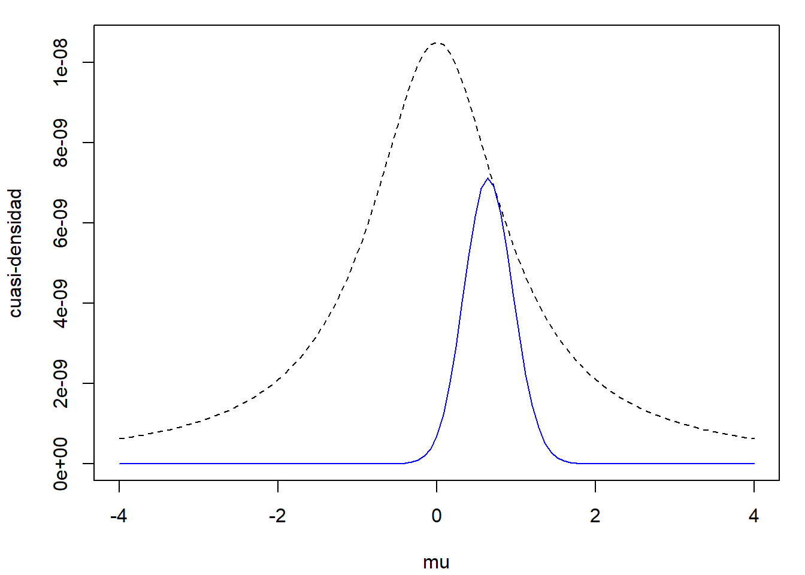
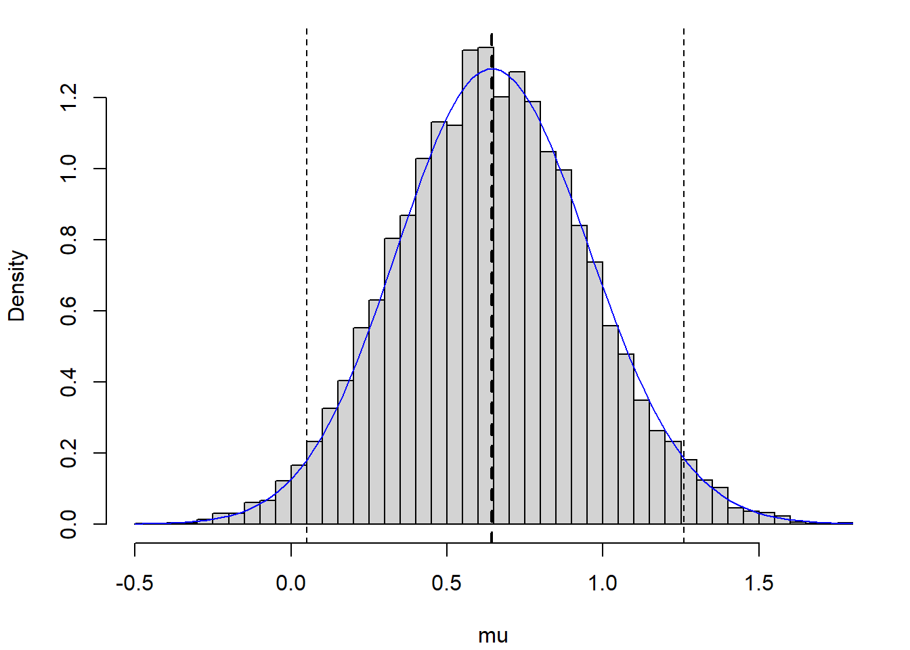

4.2 Método de aceptación-rechazo
Se trata de un método universal alternativo al de inversión para el caso de que no se pueda emplear la función cuantil, pero se dispone de una expresión (preferiblemente sencilla) para la función de densidad objetivo \(f\left( x \right)\).
La idea es simular una variable aleatoria bidimensional \(\left( X, Y\right)\) con distribución uniforme en el hipografo de \(f\) (la región del plano comprendida entre el eje OX y \(f\), de área 1): \[A_{f}=\left\{ \left( x,y\right) \in \mathbb{R}^{2}:0\leq y\leq f(x) \right\}.\] De esta forma la primera componente tendrá la distribución deseada (ver Figura 4.4):
\[ P\left( a<X<b\right) = \frac{\text{Area de }\left\{ \left( x,y\right) \in \mathbb{R}^{2}:a<x<b;~0\leq y\leq f(x) \right\} }{\text{Area de } A_{f}} \\ = \int_{a}^{b}f(x) dx \]
Figura 4.4: Puntos con distribución uniforme en el hipografo de una función de densidad.
El resultado anterior es también válido para una cuasi-densidad16 \(f^{\ast}\) (no depende de la constante normalizadora):
- Si \(\left( X,Y\right) \sim \mathcal{U}\left(A_{f^{\ast}}\right)\) entonces \(X\sim f\).
Para simular una distribución uniforme en el hipografo \(A_{f}\) (o en \(A_{f^{\ast}}\)), lo que se hace es utilizar una variable aleatoria auxiliar \(T\) con función de densidad \(g\), similar a \(f\) y fácil de simular, y una constante \(c > 0\) verificando: \[f(x) \leq c\cdot g(x) \text{, }\forall x\in \mathbb{R}.\] Podemos generar valores en \(A_{cg} \supset A_{f}\) empleando el resultado:
- Si \(T\) es una variable aleatoria con función de densidad \(g\) y \(U \sim \mathcal{U}(0, 1)\) entonces \[\left( T,c\cdot U\cdot g(x) \right) \sim \mathcal{U}\left( A_{cg}\right)\] siendo \(A_{cg}=\left\{ \left( x, y \right) \in \mathbb{R}^{2} : 0 \leq y \leq cg\left( x \right) \right\}\).
Teniendo en cuenta además que:
- Si \(\left( T,Y\right) \sim \mathcal{U}\left( A\right)\) y \(B \subset A\Rightarrow \left. \left( T,Y\right) \right\vert _{B} \sim \mathcal{U}\left(B\right)\).
Entonces, si \(\left( T, Y \right)\) sigue una distribución uniforme en \(A_{cg}\), aceptando los valores de \(\left( T, Y \right)\) que pertenezcan a \(A_{f}\) (o a \(A_{f^{\ast}}\)) se obtendrán generaciones con distribución uniforme sobre \(A_{f}\) (o \(A_{f^{\ast}}\)) y la densidad de la primera componente será \(f\).
4.2.1 Algoritmo
Supongamos que \(f\) es la densidad objetivo y \(g\) es una densidad auxiliar (fácil de simular y similar a \(f\)), de forma que existe una constante \(c>0\) tal que: \[f(x) \leq c\cdot g(x) \text{, }\forall x\in \mathbb{R},\] (de donde se deduce que el soporte de \(g\) debe contener el de \(f\)).
Algoritmo 4.3 (Método de aceptación-rechazo; Von Neuman, 1951)
Generar \(U \sim \mathcal{U}(0, 1)\).
Generar \(T \sim g\).
Si \(c\cdot U\cdot g(T) \leq f(T)\) devolver \(X=T\),
en caso contrario volver al paso 1.
4.2.2 Densidades acotadas en un intervalo cerrado
Sea \(f\) una función de densidad cualquiera con soporte en un intervalo cerrado \([a,b]\) (es decir, \(\{x : f(x) > 0\}=[a,b]\)) de tal forma que existe una constante \(M>0\) tal que \(f(x) \leq M\) \(\forall x\) (es decir, \(f\) es acotada superiormente). En este caso puede tomarse como densidad auxiliar \(g\), la de una \(\mathcal{U}(a,b)\). En efecto, tomando \(c = M\left( b-a\right)\) y teniendo en cuenta que \[g(x) = \left\{ \begin{array}{ll}\frac{1}{b-a} & \text{si } x \in [a,b]\\ 0 & \text{en caso contrario} \end{array} \right.\] se tiene que \(f(x) \leq M = \frac{c}{b-a}=c \cdot g(x)\), \(\forall x \in [a,b]\). Así pues, el algoritmo quedaría como sigue:
Generar \(U,V\sim \mathcal{U}(0, 1)\).
Hacer \(T = a + \left( b-a \right) V\).
Si \(M \cdot U\leq f\left( T \right)\) devolver \(X = T\),
en caso contrario volver al paso 1.
Nota:. No confundir \(M\) con \(c = M \left( b - a \right)\).
Ejemplo 4.3 (simulación de distribución beta a partir de la uniforme)
Para simular una variable con función de densidad \(\mathcal{Beta}(\alpha, \beta)\):
\[f(x)=\frac{\Gamma (\alpha + \beta )}{\Gamma (\alpha )\Gamma (\beta )}
x^{\alpha -1}(1-x)^{\beta -1}\text{ si }0 \leq x \leq 1,\]
(siguiendo la notación de la función dbeta(x, shape1, shape2) de R), podemos considerar como distribución auxiliar una \(\mathcal{U}(0,1)\),
con \(g(x) = 1\) si \(0 \leq x \leq 1\).
Esta distribución está acotada y es unimodal, si \(\alpha\) y \(\beta\) son mayores17 que 1, y su moda es \(\frac{\alpha - 1} {\alpha + \beta - 2}\), por lo que: \[c = M = \max_{0 \leq x \leq 1}f(x) = f\left( \frac{\alpha - 1} {\alpha + \beta - 2} \right).\]
Por ejemplo, considerando \(\alpha = 2\) y \(\beta = 4\), si comparamos la densidad objetivo con la auxiliar reescalada (Figura 4.5), confirmamos que esta última está por encima (y llegan a tocarse, por lo que se está empleando la cota óptima; ver siguiente sección).
# densidad objetivo: dbeta
# densidad auxiliar: dunif
s1 <- 2
s2 <- 4
curve(dbeta(x, s1, s2), -0.1, 1.1, lwd = 2)
m <- dbeta((s1 - 1)/(s1 + s2 - 2), s1, s2)
# abline(h = m, lty = 2)
segments(0, m, 1, m, lty = 2, lwd = 2)
abline(v = 0, lty = 3)
abline(v = 1, lty = 3)
abline(h = 0, lty = 3)Figura 4.5: Densidad objetivo beta (línea continua) y densidad auxiliar unifome reescalada (línea discontinua).
El siguiente código implementa el método de aceptación-rechazo para simular valores de la densidad objetivo (se incluye una variable “global” ngen para contar el número de generaciones de la distribución auxiliar):
ngen <- 0
rbeta2 <- function(s1 = 2, s2 = 2) {
# Simulación por aceptación-rechazo
# Beta a partir de uniforme
m <- dbeta((s1 - 1)/(s1 + s2 - 2), s1, s2)
while (TRUE) {
u <- runif(1)
x <- runif(1)
ngen <<- ngen+1
if (m*u <= dbeta(x, s1, s2)) return(x)
}
}
rbeta2n <- function(n = 1000, s1 = 2, s2 = 2) {
# Simulación n valores Beta(s1, s2)
ngen <<- 0
x <- numeric(n)
for(i in 1:n) x[i]<-rbeta2(s1, s2)
return(x)
}Empleando estas funciones podemos generar una muestra de \(10^3\) observaciones de una \(\mathcal{Beta}(2, 4)\) (calculando de paso el tiempo de CPU):
set.seed(1)
nsim <- 1000
ngen <- 0
system.time(x <- rbeta2n(nsim, s1, s2))## user system elapsed
## 0.02 0.00 0.01Para analizar la eficiencia podemos emplear el número de generaciones de la distribución auxiliar (siguiente sección):
{cat("Número de generaciones = ", ngen)
cat("\nNúmero medio de generaciones = ", ngen/nsim)
cat("\nProporción de rechazos = ", 1-nsim/ngen, "\n")}## Número de generaciones = 2121
## Número medio de generaciones = 2.121
## Proporción de rechazos = 0.52852Finalmente podemos representar la distribución de los valores generados y compararla con la densidad teórica:
hist(x, breaks = "FD", freq = FALSE, main = "")
lines(density(x))
curve(dbeta(x, s1, s2), col = "blue", add = TRUE)Figura 4.6: Distribución de los valores generados mediante el método de aceptación-rechazo.
Al ser un método exacto de simulación (si está bien implementado), la distribución de los valores generados debería comportarse como una muestra genuina de la distribución objetivo.
Ejercicio 4.1
Dar un algoritmo para simular la función de densidad dada por \(f\left(x\right) = \frac{1}{16} \left( 3x^{2}+2x+2 \right)\) si \(0 \le x \le 2\), cero en otro caso. Estudiar su eficiencia.
4.2.3 Eficiencia del algoritmo
Como medida de la eficiencia del algoritmo de aceptación-rechazo podríamos considerar el número de iteraciones del algoritmo, es decir, el número de generaciones de la densidad auxiliar y de comparaciones para aceptar un valor de la densidad objetivo. Este número \(N\) es aleatorio y sigue una distribución geométrica (entendida como el número de pruebas necesarias hasta obtener el primer éxito[^04-AR-3]) con parámetro \(p\) (probabilidad de éxito) la probabilidad de aceptación en el paso 3: \[p = \frac{\text{area}\left(A_{f}\right)}{\text{area}\left( A_{cg}\right)} = \frac{1}{c}.\]
[^04-AR-3] Esta distribución también se puede definir como el número de fracasos hasta el primer éxito al realizar experimentos de Bernoulli independientes, que es como la consideraremos normalmente (ya que coincide con la parametrización de R, como un caso particular de la distribución binomial negativa). Sin embargo, en este caso resulta más cómodo considerar el número total de pruebas.
Por tanto: \[E\left( N \right) = \frac1p = c\] es el número medio de iteraciones del algoritmo (el número medio de pares de variables \(\left( T,U\right)\) que se necesitan generar, y de comparaciones, para obtener una simulación de la densidad objetivo).
Es obvio, por tanto, que cuanto más cercano a 1 sea el valor de \(c\) más eficiente será el algoritmo (el caso de \(c=1\) se correspondería con \(g=f\) y no tendría sentido emplear este método). Una vez fijada la densidad \(g\), el valor óptimo será: \[c_{\text{opt}}=\max_{\{x : g(x) > 0\}} \frac{f(x)}{g(x)}.\]
Nota:. Hay que tener en cuenta que la cota óptima es el número medio de iteraciones \(c\) solo si conocemos las constantes normalizadoras. Si solo se conoce la cuasi-densidad \(f^{\ast}\) de la distribución objetivo (o de la auxiliar), la correspondiente cota óptima: \[\tilde{c} = \max_{\{x : g(x) > 0\}} \frac{f^{\ast}(x)}{g(x)}\] asumirá la constante desconocida, aunque siempre podemos aproximar por simulación el verdadero valor de \(c\) y a partir de él la constante normalizadora (ver Ejercicio 4.2). Basta con tener en cuenta que, si \(f(x) = f^{\ast}(x)/k\): \[\frac{1}{c} = \frac{\text{area}\left(A_{f^{\ast}}\right)}{\text{area}\left( A_{\tilde{c}g}\right)} = \frac{k}{\tilde{c}},\] y por tanto \(k= \tilde{c}/c\).
Ejemplo 4.4 (simulación de la normal a partir de la doble exponencial)
Se trata de simular la distribución normal estándar, con función de densidad:
\[f(x) =\frac{1}{\sqrt{2\pi}}e^{-\frac{x^{2}}{2}} \text{, } x\in\mathbb{R}\text{, }\]
empleando el método de aceptación-rechazo considerando como distribución auxiliar una doble exponencial con \(\lambda=1\) (o distribución de Laplace):
\[g(x) =\frac{1}{2}e^{-\left| x \right|} \text{, } x\in\mathbb{R}.\]
Esta distribución se utilizó en el Ejemplo 4.2, donde se definió la densidad auxiliar ddexp(x, lambda) y la función rdexp(lambda) para generar un valor aleatorio de esta distribución.
En este caso el soporte de ambas densidades es la recta real y el valor óptimo para \(c\) es: \[c_{\text{opt}} = \max_{x\in\mathbb{R}}\frac{f(x)}{g(x) } = \max_{x\in\mathbb{R}} \frac{\frac{1}{\sqrt{2\pi}}e^{-\frac{x^{2}}{2}}}{\frac{1}{2}e^{-\left| x\right| }} = \sqrt{\frac{2}{\pi}}\max_{x\in\mathbb{R}}e^{\varphi(x)} = \sqrt{\frac{2}{\pi}}e^{\max_{x\in\mathbb{R}}\varphi(x)},\] donde \(\varphi(x) = -\frac{x^{2}}{2}+\left| x \right|\). Dado que esta función es simétrica, continua en toda la recta real y diferenciable tantas veces como se desee salvo en \(x=0\), bastará encontrar su máximo absoluto en el intervalo \([0,\infty]\): \[\begin{aligned} x & >0\Rightarrow\varphi^{\prime}(x) =-x+1,\varphi ^{\prime\prime}(x) =-1;\\ \{x & >0,\varphi^{\prime}(x) =0\}\Leftrightarrow x=1. \end{aligned}\] Por tanto, como \(\varphi^{\prime\prime}(1) <0\), \(\varphi\) alcanza un máximo relativo en \(x=1\) y otro de idéntico valor en \(x=-1\). Resulta fácil demostrar que ambos son máximos absolutos (por los intervalos de crecimiento y decrecimiento de la función). Como consecuencia: \[c_{\text{opt}} = \sqrt{\frac{2}{\pi}}e^{\varphi(1)} =\sqrt{\frac{2}{\pi}}e^{1/2} =\sqrt{\frac{2e}{\pi}} \approx 1.3155.\]
Si comparamos la densidad objetivo con la auxiliar reescalada con los parámetros óptimos (Figura 4.7), vemos que esta última está por encima, como debería ocurrir, pero llegan a tocarse (lo que validaría el cálculo para la obtención de la cota óptima).
# densidad objetivo: dnorm
# densidad auxiliar: ddexp
c.opt <- sqrt(2*exp(1)/pi)
lambda.opt <- 1
curve(c.opt * ddexp(x), xlim = c(-4, 4), lty = 2)
curve(dnorm, col = "blue", add = TRUE)Figura 4.7: Densidad objetivo (normal estándar, línea continua) y densidad auxiliar (doble exponencial, línea discontinua) reescalada.
Alternativamente, en lugar de obtener la cota óptima de modo analítico, podríamos aproximarla numéricamente:
# NOTA: Cuidado con los límites
# optimize(f = function(x) dnorm(x)/ddexp(x), maximum = TRUE, interval = c(-0.5,0.5))
optimize(f = function(x) dnorm(x)/ddexp(x), maximum = TRUE, interval = c(0, 2))## $maximum
## [1] 1
##
## $objective
## [1] 1.3155Vemos que la aproximación numérica coincide con el valor óptimo real \(c_{\text{opt}} \approx\) 1.31549 (que se alcanza en \(x = \pm 1\)).
Para establecer la condición de aceptación o rechazo es recomendable emplear \(c\cdot U\cdot g(T) \leq f(T)\). Aunque, en este caso concreto, sería equivalente a: \[c\cdot U\cdot\frac{g(T) }{f(T) }=\sqrt{\frac {2e}{\pi}}U\sqrt{\frac{\pi}{2}}\exp\left( \frac{T^{2}}{2}-\left\vert T\right\vert \right) =U\cdot\exp\left( \frac{T^{2}}{2}-\left\vert T\right\vert +\frac{1}{2}\right) \leq 1.\]
Teniendo en cuenta los resultados anteriores, podríamos emplear el siguiente código para generar los valores de la densidad objetivo:
ngen <- 0
rnormAR <- function() {
# Simulación por aceptación-rechazo
# Normal estandar a partir de doble exponencial
c.opt <- sqrt(2*exp(1)/pi)
lambda.opt <- 1
while (TRUE) {
u <- runif(1)
x <- rdexp(lambda.opt) # rdexpn(1, lambda.opt)
ngen <<- ngen + 1 # Comentar esta línea para uso normal
# if (u*exp((x^2+1)*0.5-abs(x)) <= 1) return(x)
if (c.opt * u * ddexp(x, lambda.opt) <= dnorm(x)) return(x)
}
}
rnormARn <- function(n = 1000) {
# Simulación n valores N(0,1)
ngen <<- 0
x <- numeric(n)
for(i in 1:n) x[i] <- rnormAR()
return(x)
}Generamos una muestra de \(10^4\) observaciones:
set.seed(1)
nsim <- 10^4
ngen <- 0
system.time(x <- rnormARn(nsim))## user system elapsed
## 0.05 0.01 0.06Evaluamos la eficiencia:
{cat("Número de generaciones = ", ngen)
cat("\nNúmero medio de generaciones = ", ngen/nsim)
cat("\nProporción de rechazos = ", 1-nsim/ngen, "\n")}## Número de generaciones = 13178
## Número medio de generaciones = 1.3178
## Proporción de rechazos = 0.24116Estos valores serían aproximaciones por simulación de los correspondientes valores teóricos (valor medio \(c \approx 1.3155\) y probabilidad de rechazo \(1 - p = 1 - 1/c \approx 0.23983\)). A partir de ellos podríamos decir que el algoritmo es bastante eficiente.
Finalmente comparamos la distribución de los valores generados con la densidad teórica:
hist(x, breaks = "FD", freq = FALSE, main = "")
lines(density(x))
curve(dnorm, col = "blue", add = TRUE)
Figura 4.8: Distribución de los valores generados mediante el método de aceptación-rechazo.
Podemos observar que la distribución de los valores generados es la que cabría esperar de una muestra de tamaño nsim de la distribución objetivo (lo que nos ayudaría a confirmar que el algoritmo está bien implementado, al ser un método exacto de simulación).
4.2.4 Elección de la densidad auxiliar
El principal problema con este método es encontrar una densidad auxiliar \(g\) de forma que \(c_{\text{opt}}\) sea próximo a 1. Una solución intermedia consiste en seleccionar una familia paramétrica de densidades \(\{g_{\theta} : \theta \in \Theta\}\) entre las que haya alguna que se parezca bastante a \(f\), encontrar el valor de \(c\) óptimo para cada densidad de esa familia: \[c_{\theta}=\max_{x}\frac{f(x) }{g_{\theta}(x) }\] y, finalmente, elegir el mejor valor \(\theta_{0}\) del parámetro, en el sentido de ofrecer el menor posible \(c_{\theta}\): \[c_{\theta_{0}}=\min_{\theta\in\Theta}\max_{x}\frac{f(x) }{g_{\theta}(x)}.\]
Ejemplo 4.5 (simulación de la normal mediante la doble exponencial continuación)
Continuando con el Ejemplo 4.4 anterior sobre la simulación de una normal estándar mediante el método de aceptación-rechazo, en lugar de fijar la densidad auxiliar a una doble exponencial con \(\lambda=1\), consideraremos el caso general de \(\lambda>0\): \[g_{\lambda}(x) = \frac{\lambda}{2}e^{-\lambda\left| x \right|} \text{, } x\in\mathbb{R}.\]
Si pretendemos encontrar el mejor valor de \(\lambda\), en términos de eficiencia del algoritmo, debemos calcular: \[c_{\lambda_{0}} = \min_{\lambda>0}\max_{x\in\mathbb{R}}\frac{f(x)}{g_{\lambda(x)}} =\min_{\lambda>0}\max_{x\in\mathbb{R}}\frac{\frac{1}{\sqrt{2\pi}}e^{-\frac{x^{2}}{2}}}{\frac{\lambda}{2}e^{-\lambda \left| x \right| }}.\] De forma totalmente análoga a la vista para el caso \(\lambda=1\), se tiene que: \[c_{\lambda}=\max_{x\in\mathbb{R}}\frac{\frac{1}{\sqrt{2\pi}}e^{-\frac{x^{2}}{2}}}{\frac{\lambda}{2}e^{-\lambda \left| x \right| }}=\frac{1}{\lambda}\sqrt{\frac{2}{\pi}}\max_{x\in\mathbb{R}}e^{\varphi _{\lambda(x)}}=\frac{1}{\lambda}\sqrt{\frac{2}{\pi}}e^{\max_{x\in\mathbb{R}}\varphi_{\lambda(x)} },\] donde \(\varphi_{\lambda}(x) =-\frac{x^{2}}{2}+\lambda\left| x \right|\). De forma totalmente similar también puede probarse que \(\varphi_{\lambda}\) alcanza su máximo absoluto en los puntos \(x=\pm\lambda\), siendo dicho valor máximo \(\varphi_{\lambda}\left( \pm\lambda \right) = \frac{\lambda^{2}}{2}\). Como consecuencia: \[c_{\lambda}=\frac{1}{\lambda}\sqrt{\frac{2}{\pi}}e^{\varphi_{\lambda}\left( \pm\lambda \right)} =\frac{e^{\frac{\lambda^{2}}{2}}}{\lambda}\sqrt{\frac{2}{\pi}}.\]
Finalmente debemos encontrar \(\lambda_{0}\) tal que \(c_{\lambda_{0}}=\min_{\lambda>0}c_{\lambda}\). Como: \[\frac{\partial c_{\lambda}}{\partial \lambda} =\sqrt{\frac{2}{\pi}}\frac{e^{\frac{\lambda^{2}}{2}}\left( \lambda^{2}-1\right) }{\lambda^{2}},\] entonces \(\frac{\partial c_{\lambda}}{\partial \lambda} = 0\Leftrightarrow\lambda=1\), ya que \(\lambda>0\). Además: \[\left. \frac{\partial ^{2}c_{\lambda}}{\partial \lambda^{2}}\right|_{\lambda=1} =\left.\sqrt{\frac {2}{\pi}}\frac{e^{\frac{\lambda^{2}}{2}}\left( \lambda^{5}-\lambda ^{3}+2\lambda\right) }{\lambda^{4}}\right|_{\lambda=1}=2\sqrt{\frac{2e}{\pi}}>0,\] luego en \(\lambda=1\) se alcanza el mínimo.
curve(exp(x^2/2)/x*sqrt(2/pi), 0.1, 2.5,
xlab = expression(lambda), ylab = expression(c[lambda]))
abline(v = 1, lty = 2)Figura 4.9: Representación de la cota óptima dependiedo del valor del parámetro y mínimo global (línea vertical).
De esto se deduce que la mejor densidad auxiliar doble exponencial es la correspondiente a \(\lambda=1\). Por tanto el algoritmo más eficiente, con esta familia de densidades auxiliares, es el expuesto en el Ejemplo 4.4.
Alternativamente también podríamos aproximar simultáneamente el parámetro óptimo y la cota óptima de la densidad auxiliar numéricamente:
# Obtención de valores c y lambda óptimos aproximados
fopt <- function(lambda) {
# Obtiene c fijado lambda
optimize(f = function(x) dnorm(x)/ddexp(x,lambda),
maximum = TRUE, interval = c(0, 2))$objective
}
# Encontrar lambda que minimiza
res <- optimize(fopt, interval = c(0.5, 2))
lambda.opt2 <- res$minimum
c.opt2 <- res$objective
lambda.opt2 ## [1] 1c.opt2## [1] 1.31554.2.5 Ejemplo: inferencia bayesiana
El algoritmo de aceptación-rechazo se emplea habitualmente en inferencia bayesiana. Denotando por:
\(f(x | \theta)\) la densidad de una observación condicionada al valor del parámetro \(\theta \in \Theta\).
\(\pi(\theta)\) la densidad a priori (se supone que el parámetro \(\theta\) es aleatorio).
\(\mathbf{x}=(x_1,...,x_n)^{\top}\) la muestra observada.
Suponiendo que \(\mathbf{x}\) es una muestra aleatoria simple, tendríamos que: \[f(\mathbf{x}|\theta) = \prod\limits_{i=1}^{n}f(x_i | \theta)\] que, considerada como función de \(\theta\), se denomina función de verosimilitud y se denota habitualmente por \(\mathcal{L}(\theta | \mathbf{x})\). Empleando esta notación, también podríamos expresar la distribución conjunta como: \[f(\mathbf{x}, \theta) = \mathcal{L}(\theta | \mathbf{x})\pi(\theta)\]
El objetivo sería simular la distribución a posteriori de \(\theta\): \[\pi(\theta|\mathbf{x}) = \frac{\mathcal{L}(\theta | \mathbf{x})\pi(\theta)}{\int_\Theta \mathcal{L}(\theta | \mathbf{x})\pi(\theta)d\theta}\] Es decir: \[\pi(\theta | \mathbf{x}) \propto \mathcal{L}(\theta | \mathbf{x})\pi(\theta).\]
Como esta distribución cambia al variar la muestra observada, puede resultar difícil encontrar una densidad auxiliar adecuada para simular valores de la densidad a posteriori \(\pi(\theta|\mathbf{x})\) mediante el método de aceptación-rechazo.
Una forma de proceder (en principio no recomendada), sería considerar como densidad auxiliar la densidad a priori \(\pi(\theta)\). Así resultaría bastante fácil obtener la cota optima \(\tilde{c}\) y verificar la condición de aceptación18, ya que:
\(\pi(\theta |\mathbf{x})/\pi(\theta)\propto \mathcal{L}(\theta | \mathbf{x})\)
\(\mathcal{L}(\theta | \mathbf{x}) \leq \tilde{c} = \mathcal{L}(\hat{\theta} | \mathbf{x})\) siendo \(\hat{\theta}\) el estimador máximo verosímil de \(\theta\).
Teniendo en cuenta esto, el algoritmo de aceptación-rechazo sería:
Generar \(U \sim \mathcal{U}(0, 1)\).
Generar \(\tilde{\theta}\sim \pi(\theta)\).
Si \(\mathcal{L}(\hat{\theta} | \mathbf{x}) \cdot U \leq \mathcal{L}(\tilde{\theta} | \mathbf{x})\) devolver \(\tilde{\theta}\),
en caso contrario volver al paso 1.
Aunque, como se muestra en el siguiente ejercicio, esta elección de densidad auxiliar puede ser muy poco adecuada, siendo preferible en la práctica emplear un método adaptativo que construya la densidad auxiliar de forma automática (Sección 4.3.1).
Ejercicio 4.2 (Simulación de la distribución a posteriori a partir de la distribución a priori)
Se desea estimar la media \(\theta\) de una distribución normal \(N(\theta, 1)\) (supondremos que la desviación típica es conocida). Para ello se va a simular la distribución a posteriori de \(\theta\) por el método de aceptación-rechazo. En este caso, en la estimación bayesiana de la media de una distribución normal, se suele utilizar una distribución de Cauchy como distribución a priori.
Generar una muestra i.i.d. \(X_{i}\sim N(\theta_{0},1)\) de tamaño \(n=10\) con \(\theta_{0}=1\). Utilizar una \(Cauchy(0,1)\) (
rcauchy()) como distribución a priori y como densidad auxiliar. Simular por aceptación-rechazo una muestra de la densidad a posteriori (empleardnorm()para construir la verosimilitud). Obtener el intervalo de probabilidad/credibilidad al 95%.mu0 <- 1 n <- 10 nsim <- 10^4 set.seed(54321) x <- rnorm(n, mean = mu0) # Función de verosimilitud # lik1 <- function(mu) prod(dnorm(x, mean = mu)) # escalar lik <- Vectorize(function(mu) prod(dnorm(x, mean = mu))) # vectorial # Cota óptima # Estimación por máxima verosimilitud emv <- optimize(f = lik, int = range(x), maximum = TRUE) emv## $maximum ## [1] 0.73538 ## ## $objective ## [1] 3.3036e-08c.cuasi <- emv$objectiveEn este caso concreto, ya sabríamos que el estimador máximo verosímil es la media muestral:
mean(x)## [1] 0.7354y por tanto:
c.cuasi <- lik(mean(x)) c.cuasi## [1] 3.3036e-08# f.cuasi <- function(mu) sapply(mu, lik1)*dcauchy(mu) f.cuasi <- function(mu) lik(mu)*dcauchy(mu) curve(c.cuasi * dcauchy(x), xlim = c(-4, 4), ylim = c(0, c.cuasi/pi), lty = 2, xlab = "mu", ylab = "cuasi-densidad") curve(f.cuasi, col = "blue", add = TRUE)Figura 4.10: Comparación de la cuasi-densidad a posteriori (línea contínua) con la densidad a priori reescalada (línea discontinua).
Por ejemplo, podríamos emplear el siguiente código para generar simulaciones de la distribución a posteriori mediante aceptación-rechazo a partir de la distribución de Cauchy:
ngen <- nsim mu <- rcauchy(nsim) ind <- c.cuasi*runif(nsim) > lik(mu) # TRUE si no verifica condición # Volver a generar si no verifica condición while (sum(ind)>0){ le <- sum(ind) ngen <- ngen + le mu[ind] <- rcauchy(le) ind[ind] <- c.cuasi*runif(le) > lik(mu[ind]) # TRUE si no verifica condición } { # Número generaciones cat("Número de generaciones = ", ngen) cat("\nNúmero medio de generaciones = ", ngen/nsim) cat("\nProporción de rechazos = ", 1-nsim/ngen,"\n") }## Número de generaciones = 59422 ## Número medio de generaciones = 5.9422 ## Proporción de rechazos = 0.83171A partir de la aproximación del número medio de generaciones podemos aproximar la constante normalizadora:
c.sim <- ngen/nsim cte.sim <- c.cuasi/c.sim # integrate(f.cuasi, -Inf, Inf) f.aprox <- function(mu) f.cuasi(mu)/cte.simFinalmente, a partir de los valores generados podemos aproximar el intervalo de probabilidad al 95% (intervalo de credibilidad bayesiano):
q <- quantile(mu, c(0.025, 0.975)) q## 2.5% 97.5% ## 0.050011 1.260262# Representar estimador e IC Bayes hist(mu, freq=FALSE, breaks = "FD", main="") # abline(v = mean(x), lty = 3) # Estimación frecuentista abline(v = mean(mu), lty = 2, lwd = 2) # Estimación Bayesiana abline(v = q, lty = 2) curve(f.aprox, col = "blue", add = TRUE)Figura 4.11: Distribución de los valores generados y aproximación del intervalo de credibilidad.
Repetir el apartado anterior con \(n=100\).
Una cuasi-densidad es cualquier función no negativa \(f^{\ast}(x) \geq 0\) integrable. Por tanto, si \(k = \int_{-\infty}^{+\infty}f^{\ast}(x)dx\) es el área bajo esta curva, denominada constante normalizadora, entonces \(f(x) = \frac{1}{k}f^{\ast}(x)\) es una densidad. En ocasiones no interesa especialmente esta constante \(k\) (no es necesario calcularla o simplemente se quieren simplificar las expresiones) y se denota por \(f(x) \propto f^{\ast}(x)\) que la función de densidad es proporcional a la cuasi-densidad. Por ejemplo, a partir de la densidad conjunta \(f(x, y)\) de una variable aleatoria bidimensional \((X, Y)\), podemos obtener la densidad de la distribución condicionada \(X|Y=y_0\): \[f(x | y_0) = \frac{f(x, y_0)}{f_Y(y_0)}\] siendo \(f_Y(y_0) = \int_{-\infty}^{+\infty}f(x, y_0)dx\) la densidad marginal de \(Y\) evaluada en \(y_0\). Por tanto \(f(x | y_0) \propto f(x, y_0)\). De la expresión anterior también se deduce que: \[f(x, y) = f(x | y)f_Y(y) = f(y | x)f_X(x)\] y podríamos escribir que: \[f(y | x) \propto f(x | y)f_Y(y)\] que sería una expresión del teorema de Bayes aplicado a densidades.↩︎
Si \(\alpha\) o \(\beta\) son iguales a 1 puede simularse fácilmente por el método de inversión y si alguno es menor que 1 esta densidad no está acotada.↩︎
La condición \(\tilde{c} \cdot U \cdot g(T) \leq f^{\ast}(T)\) del algoritmo general, se puede reescribir como \(\tilde{c} \cdot U \leq f^{\ast}(T) / g(T)\).↩︎